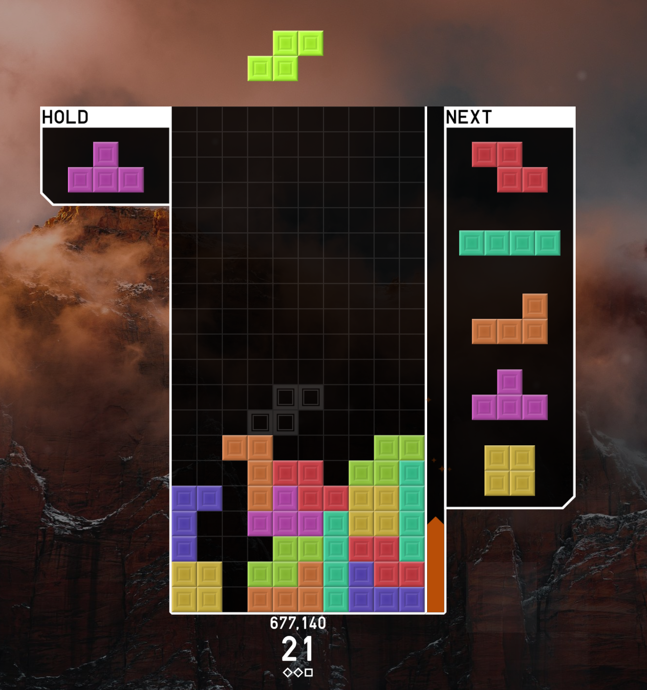
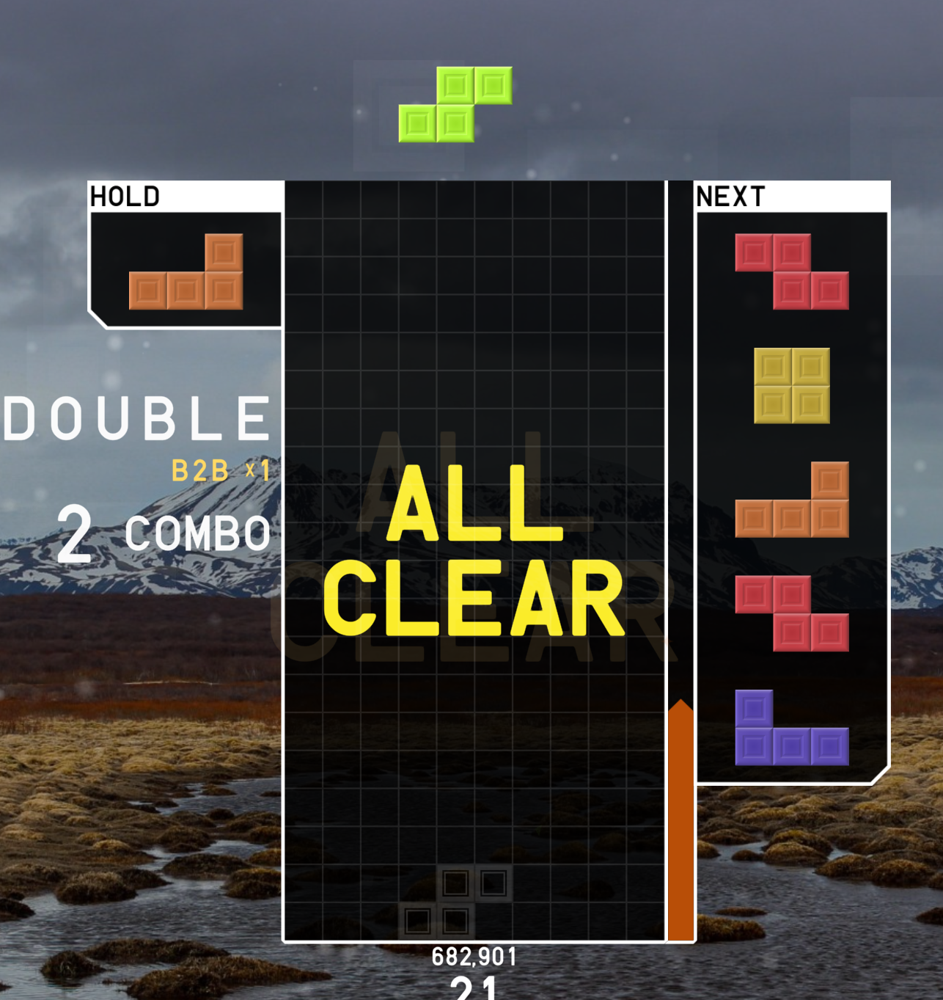
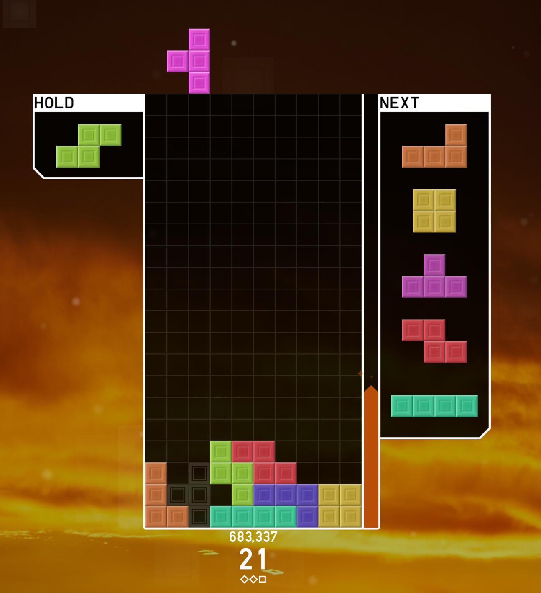
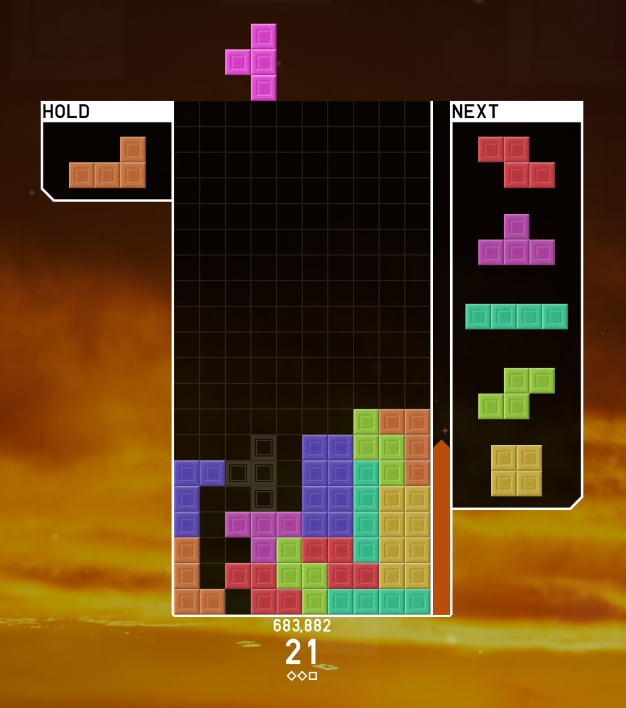

목표
7종류의 테트리미노를 필드에 배치해 가로줄을 완성합니다. 한 줄이 전부 채워지면 사라지고, 위의 블록이 내려옵니다.
Tetris Study Notes
처음 배우는 사람이 헷갈리기 쉬운 기본 개념, 주요 용어, 대표 빌드, 개막 오프닝, 연습 루틴을 한곳에 모았습니다. 외우기보다 흐름을 이해하는 데 초점을 맞췄습니다.
01 · Fundamentals
테트리스는 단순히 블록을 빨리 놓는 게임이 아닙니다. 필드 관리, 다음 블록 예측, 회전 판단, 공격 준비가 동시에 필요한 전략 퍼즐입니다.
7종류의 테트리미노를 필드에 배치해 가로줄을 완성합니다. 한 줄이 전부 채워지면 사라지고, 위의 블록이 내려옵니다.
여러 줄을 동시에 지우거나 T스핀을 성공시키면 대전형 테트리스에서 상대에게 방해 줄을 보냅니다.
초보 단계에서는 빠른 속도보다 구멍을 만들지 않는 배치와 낮은 필드 유지가 중요합니다.
02 · Tetrominoes
긴 막대형 블록입니다. 4줄 제거인 테트리스를 만들 수 있어 공격과 정리에 중요합니다.
정사각형 블록입니다. 안정적이지만 복잡한 틈을 해결하는 능력은 낮습니다.
T스핀의 핵심 블록입니다. 회전을 이용한 고급 기술에 자주 사용됩니다.
계단형 지형을 만들거나 메울 때 쓰입니다. 잘못 놓으면 구멍을 만들기 쉽습니다.
S-미노와 반대 방향입니다. 기울어진 지형을 맞출 때 유용합니다.
한쪽으로 꺾인 형태입니다. 벽면 정리와 높이 차이 보정에 자주 쓰입니다.
J-미노의 반대 방향입니다. 빌드의 기초 구조를 만들 때 자주 등장합니다.
03 · Glossary
| 용어 | 설명 | 입문 중요도 |
|---|---|---|
| 홀드 | 현재 미노를 저장했다가 원하는 타이밍에 다시 꺼내는 기능입니다. | 높음 |
| 넥스트 | 다음에 등장할 미노 목록입니다. 현재 블록만 보고 두면 다음 배치가 막히기 쉽습니다. | 매우 높음 |
| 가방(7-Bag) | 7종의 미노가 한 묶음으로 섞여 나오는 시스템입니다. | 중간 |
| 고스트 | 하드드롭 시 블록이 떨어질 위치를 미리 보여주는 표시입니다. | 높음 |
| 백투백 | 테트리스나 T스핀 같은 강한 공격을 연속으로 성공시키는 상태입니다. | 중간 |
| 콤보 | 연속으로 줄을 지우는 상황입니다. 낮은 필드 운영과 함께 익히면 좋습니다. | 중간 |
04 · Builds

DT포는 T스핀 더블과 T스핀 트리플을 연속으로 노리는 대표 공격 빌드입니다. 성공하면 초반 흐름을 강하게 가져올 수 있습니다.

필드 위의 모든 블록을 제거하는 기술입니다. 성공 시 강력하지만, 남은 블록과 경우의 수 판단이 필요합니다.
05 · Openings


T스핀 더블을 빠르게 준비할 수 있는 안정적인 오프닝입니다. 후속 운영으로 이어가기 쉽습니다.
무리한 공격보다 깔끔한 지형 유지에 초점을 둔 오프닝입니다.
퍼펙트 클리어를 노리는 초반 전략입니다. 블록 순서 파악이 핵심입니다.
06 · Practice
구멍을 만들지 않고 낮게 유지하는 연습입니다. 모든 기술의 밑바닥입니다. 가장 단순하지만 실력 차이가 크게 나는 부분입니다.
현재 블록만 보지 말고 다음 블록을 확인하면서 배치 계획을 세웁니다.
T미노가 들어갈 지형을 알아보고 회전으로 넣는 감각을 만듭니다.
속도와 정확도를 함께 훈련합니다. 처음에는 기록보다 실수 감소를 우선합니다.
07 · Tips
빠르게 놓아도 구멍이 많으면 복구가 어렵습니다. 먼저 정확한 배치가 우선입니다.
높게 쌓을수록 선택지가 줄어듭니다. 위기 상황에서는 공격보다 정리가 먼저입니다.
T스핀, 백투백, 오프닝을 한꺼번에 외우면 머리만 복잡해집니다. 하나씩 붙이세요.
다른 단어로 다시 검색해 보세요.